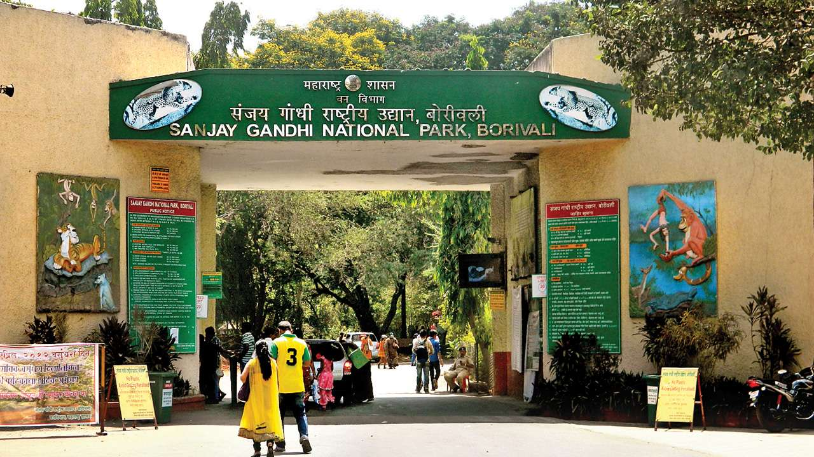

Mumbai, the city which never sleeps. This is one of the best places in Maharashtra which is located on the west coast of India.
Well, if you are planning to have a trip to Maharashtra then your first preference should be Mumbai. Because it is the combination of scenic view as well as the historic places with wildlife sanctuaries.
My favorite places are Girgaum Chowpatty and Marine Drive as I prefer peace rather than the crowd. The city grabs maximum tourists every year as it has mesmerizing places of relaxation, spiritual spots, historical places, etc.
The famous places to visit in the dream city are Gateway of India, Marine Drive, Film city of Goregaon, Siddhivinayak temple and Haji Ali mosque. Other peaceful places in the city that are always crowded with are Juhu Chowpatty, Aksha beach.
The Dream city is also famous for the shopping streets which include Colaba districts from where you can get branded clothes for your wardrobe at cheaper prices.
The bustling energy of the people every time makes the city vibrant. That’s why it is called the city that never sleeps. You will find various diversity’s culture and the celebration of many festivals. You will visit many other amazing places such as Kanheri caves, Sanjay Gandhi National Park, Mount Merry Church, Banganga Tank, etc.
Marine Beach offers mouth-watering street food as well as a beautiful view of the rolling waves during the sunset.
Pune is also listed as one of the best places in Maharashtra with cultural spots. As the city is in proximity to the other major cities like Mumbai, it also has many attractions for tourism.
The places which can be visited in the journey are Singhad fort, scuba diving and adventure trekking experience in Andharban, Lohagarh, Rajmachi fort, etc.
The city is full of adventure with amazing sights (do not use word sight view) such as the exhilarating underwater experience in Sangam Safari and Crocodile Island. The places which are best for rafting experience for beginners with easy trekking are Rajmachi fort and Kundalika river.
There are also numerous options to stay in the city such as luxurious resorts, hillside resorts which have a beautiful mountain valley view.
However, Maharashtra also consists of many hill stations such as Mahabaleshwar, Panchgani, Khandala, Lonavala which makes your trip happier.
Mahabaleshwar is one of the best places in Maharashtra. It is a hill station with beautiful valleys around and luxurious resorts. The place consists of many lakes and gardens as well as the peak points. Some of these places are Wilson’s point, Vienna lake with boating facilities.
The place is also popular for trekking and beautiful waterfalls such as Chinaman and Dhobi waterfall. The historic places of the city are Pratapgarh fort, Afzal Khan tomb, and Pratap Garden. The place is most visited in summer. The Rajpuri caves are the main attraction of tourists.
Some other places of attraction are Arthur’s seat, elephant’s head point, Connaught peak, Lingamala falls and Mahabaleshwar temple.
The place which provides eternal peace. It is nested in the Aurangabad, Maharashtra.
Another amazing location which is also listed in the best places in Maharashtra. The Ajanta Ellora caves consist of carving on the rock and painting.
The two phases of these caves include the worship halls of Buddhism tradition. The life of ancient civilization and rebirth of Buddha by presenting it pictorially. However, the story also describes the different eras of centuries. Ajanta caves are made with vivid colors and mural wall painting presenting in caves 16,17, 1 and 2.
Ellora caves include Hindu, Buddha, and Jain religion caves. It is the main attraction in the Marathwada region of Maharashtra. The caves 15 and 16 is decorated with elephants and naga. The painting in the Ajanta caves represents the Jataka tales. In caves 17, the right Buddha is carved with the painting of elephants and riders.
Sanjay Gandhi National park is one of the best national parks located in Maharashtra. The park attracts two million tourists with an amazing ecosystem and Kanheri caves in the park.
The thousands of flora and fauna diversities reside in the park. The flora includes teak, Kadamba, Karanj and Shisam, other flower species.
The fauna includes flying fox, chital, leopards, sambar deer, and four-horned antelopes. Moreover, the reptile species include pythons, cobra, monitor lizards, and bamboo pit vipers.
The other attraction of the park is Krishnagiri Upavan, lion and tiger safaris along with two watchtowers. Rock climbing is the most common adventure in the park. The place is such a paradise for tourists.
Matheran is another mesmerizing hill station located in the Sahyadri ranges on the Western Ghats. It has lust green forest, the sight of waterfalls and views of beautiful lakes.
Matheran has beautiful locations from where the sunrise and sunset can be watched from a vantage point over the valleys. The famous sites are lake charlotte, mallang point, Echo point, Luisa Point and heart point. The places become a wonderful part of your journey if you wander these places on a horse.
Matheran can be explored by a toy train from Neral. The adventure sports in the Matheran is Garbett plateau. It is also one of the best places for trekking as well as hiking with routes that are rich in wildlife, lush green forests.
Panchgani is also the best hill station which is to be visited by many tourists as it is in the proximity of the Mahabaleshwar. Panchgani is located in the Satara district surrounded by Sahyadri Ranges. The clean atmosphere with beautiful peak points.
We have visited Mapro garden as well as Mala’s Garden. The peak Table point which was my favorite place. Above all the destinations, I have visited, this was the best trip I have ever had.
From the steep hills to coastal plains, all these places provide plenty of adventure for the tourists. The Panchgani festival is also celebrated at the end of the year with colorful streets and with mouth-watering food.
Horse riding, sky diving, bungee jumping, paragliding, and camping are the most interesting activities for which this place is famous for. The main attraction of tourists is the peak points such as Sydney point, Parsi point, Cheese factory, Devrai art village, and Mapro Garden, etc.
Lavasa is India’s first privately built hill station. The place has a picturesque beauty with scenic views. Lake with a peaceful environment, lush green trees, and vibrant buildings will make your eyes colorful to amaze with its beauty.
Boating facilities are provided at the lakeside. Lakeside promenade is the main attraction of the place including many restaurants. The amazing luxurious resorts for residing will give the relief of peace. Bamboosa and Temgarh dam is the primary attraction of the place.
Well, the trip seems amazing when you are around wild lives. It is not just to preserve the wildlife but the adventure hub spot also.
Tadoba national park preserves the Tigers species located in the Chandrapur district of Maharashtra. Here, you can also enjoy the jeep safaris, view of dense forest with various other species of flora and fauna.
Apart from the tiger reserves, it has also other places to visit such as Erai Dam and Tadoba lake, Moharli, Khosla, etc. Summer is the best time to visit the place with awful scenic beauty and a lot of adventure spots.
Khandala is also one of the best places in Maharashtra located in Pune District. The place of natural beauty with the scenic view of the valley.
One can also visit the nearer places such as Karla and Bhaja caves, Lonavala Lake, Tugauli lake, Bhushi Lake, and Duke’s Nose, etc. The place is also famous for trekking, hiking, and other adventure activities. Rock climbing is the main attractive activity in tourism.
These are the places in Maharashtra which give you the exhilarating feel with amazing sight view. Maharashtra is also a rich cultural heritage and spiritual spot. It is the prime state of cultural importance. Pune, Panchgani, Mahabaleshwar, Lonavala, Mumbai are popular tourist destinations in Maharashtra.
The art of the ancient era adds to the beauty of the state. The carvings of Ajanta Ellora caves with the amazing scenic view will make your trip unforgettable.